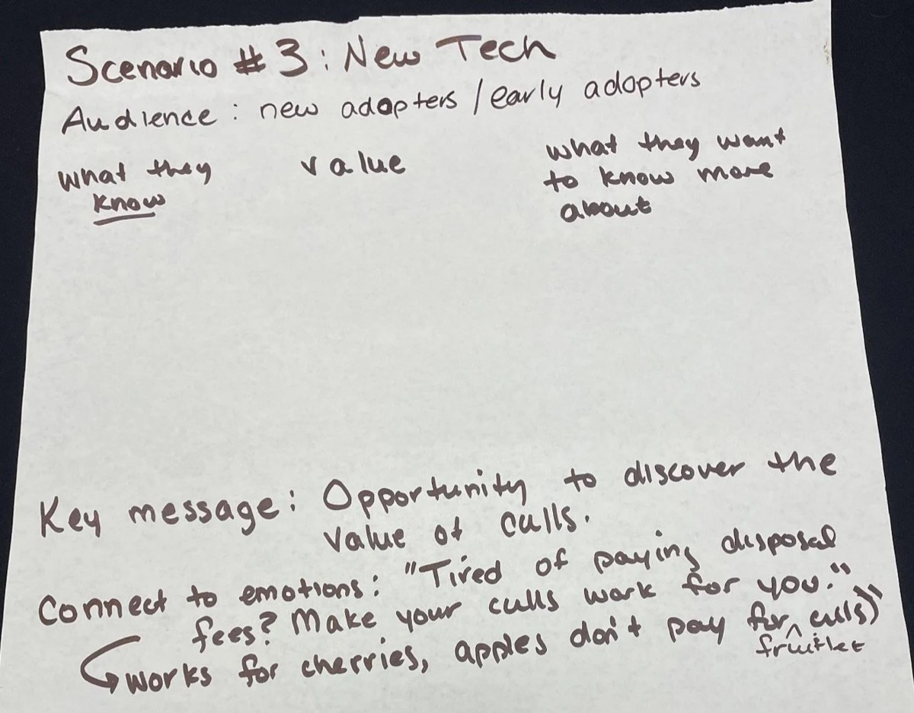
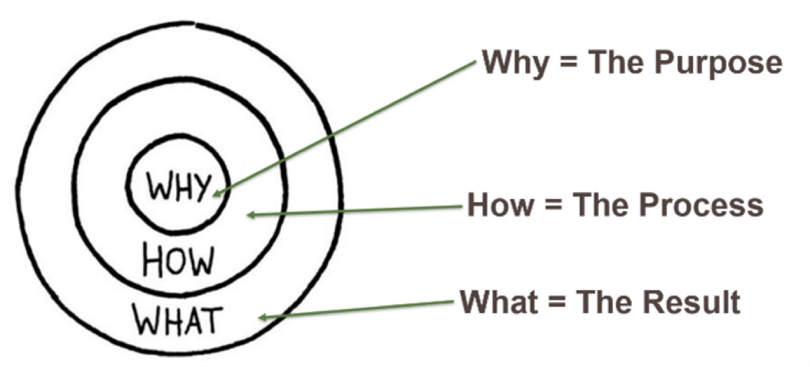
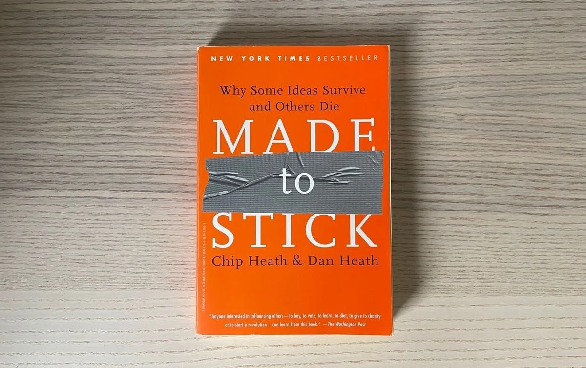

Dans le monde effréné d’aujourd’hui, où l’information est facilement accessible, il peut être difficile de s’assurer que le savoir se traduit en action. C’est particulièrement vrai dans des secteurs comme l’agriculture, la foresterie et le développement durable, où une communication efficace est essentielle pour mobiliser les parties prenantes et susciter le changement. Dans ce billet, nous explorons l’idée de relier le savoir à la pratique et présentons des stratégies pour relever ce défi.
Comprendre son public :
Avant de se plonger dans les stratégies de communication efficaces, il est essentiel de comprendre votre public. Les différents segments de la population accordent de la valeur à différents aspects de l’information que vous cherchez à transmettre. En reflétant leurs valeurs et en parlant leur langage, vous pouvez adapter votre message pour qu’il les touche.

Commencer par le pourquoi :
Le concept du cercle d’or de Simon Sinek offre des pistes précieuses pour une communication efficace. Commencer par le « pourquoi » de votre travail vous permet de communiquer efficacement votre motivation, votre système de croyances et vos processus. En formulant clairement votre raison d’être et en la reliant aux valeurs de votre public, vous pouvez favoriser un lien et une compréhension plus solides.
Le pouvoir des émotions dans la communication :
La communication scientifique et l’échange des connaissances reposent souvent sur des faits et des données. Pour véritablement rejoindre votre public, il est toutefois essentiel de faire appel à ses émotions. Dans son livre « Don't Be Such a Scientist », Randy Olson souligne le pouvoir de toucher les émotions. En faisant passer la communication de la tête au cœur et aux tripes, nous pouvons mobiliser le public plus profondément.
Donner du sens aux statistiques :
Aussi importantes soient-elles, les statistiques trouvent rarement écho à elles seules auprès du public. Pour qu’elles portent davantage, il est crucial de les inscrire dans des relations qui ont du sens. Dans leur livre « Made to Stick », Chip et Dan Heath soulignent l’importance d’utiliser les statistiques pour illustrer des relations plutôt que de s’en tenir aux seuls chiffres. En aidant les gens à retenir la relation, vous pouvez rendre les statistiques plus mémorables et plus influentes.

Créer des messages qui restent :
Pour que votre message soit mémorable et percutant, il est crucial qu’il « colle ». Il faut pour cela retirer l’information non pertinente ou qui distrait, et se concentrer sur le message central, le message clé. En tissant des relations, en faisant appel aux émotions, en utilisant des exemples locaux et en employant des analogies concrètes, vous pouvez relier le message clé aux valeurs et aux expériences de votre public.
Défis et possibilités :
Dans la deuxième partie de ce billet, nous aborderons les défis que rencontrent les agents de vulgarisation lorsqu’ils présentent de nouvelles pratiques aux agriculteurs et aux producteurs. Nous examinerons ce qui rend difficile une discussion sur le changement et présenterons des stratégies qui ont fait leurs preuves pour transmettre efficacement de nouvelles connaissances.
Relier le savoir à la pratique exige des stratégies de communication efficaces qui vont au-delà des données et des statistiques. En comprenant votre public, en créant des messages qui restent, en faisant appel aux émotions et en commençant par le pourquoi, vous pouvez combler l’écart entre le savoir et l’action.
Joignez-vous à nous dans cette démarche pour relier le savoir à la pratique. Découvrez comment une communication percutante peut transformer notre rapport à l’information et susciter un changement significatif.